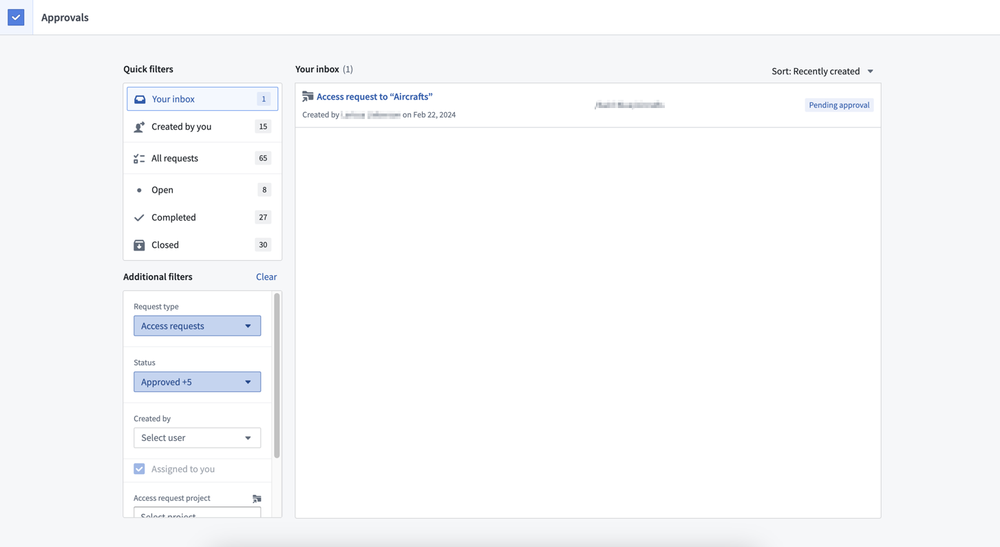
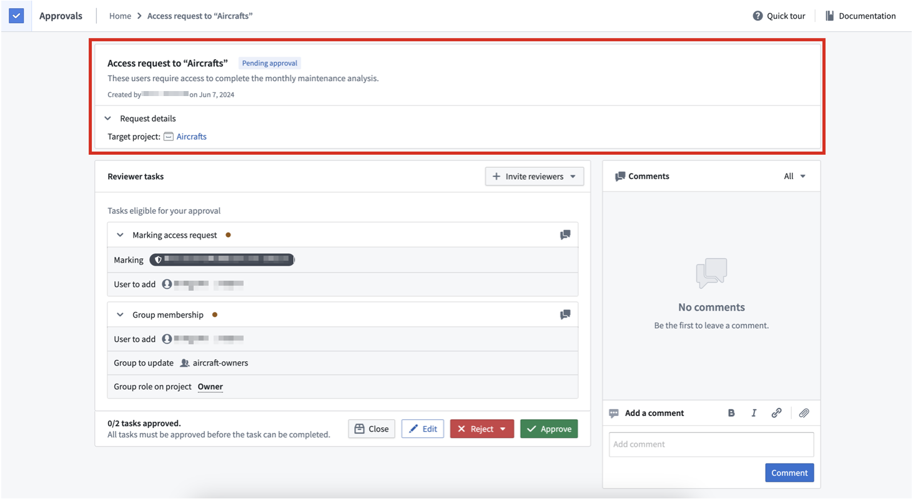
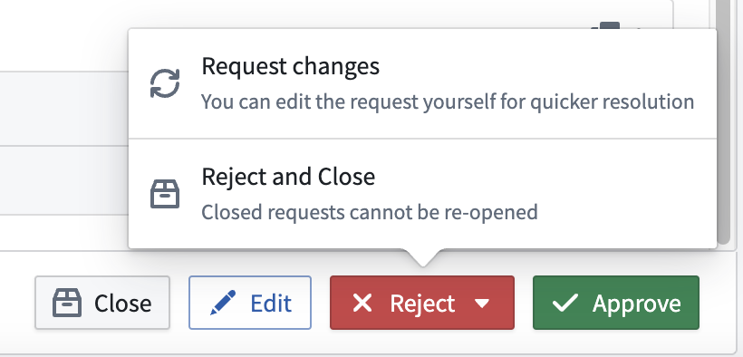
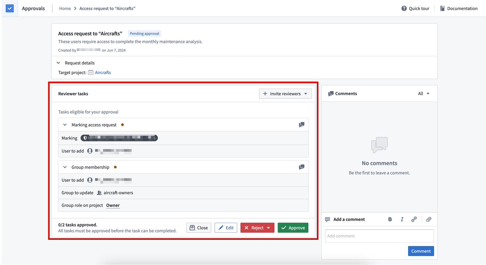
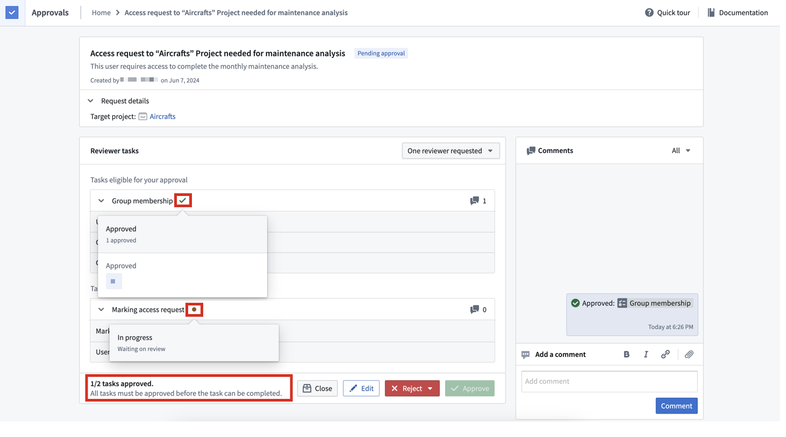
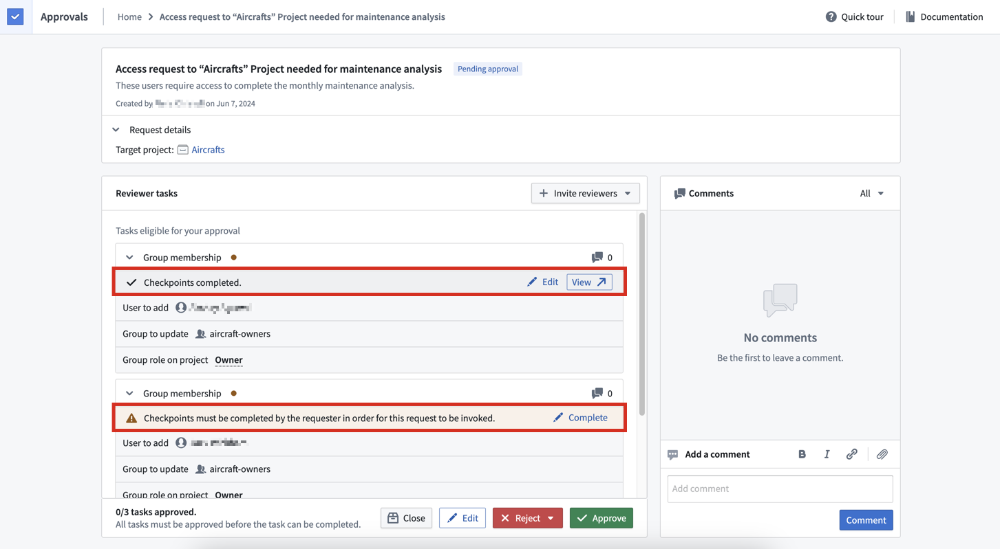
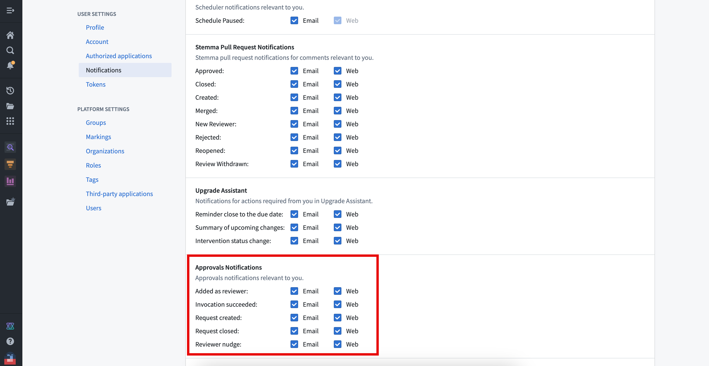

A user may not have permission to make a particular change in Foundry and needs to make a request for that change. This request gets routed to administrators for approval. The request is invoked when the necessary approvals are obtained, meaning that the requested changes are applied.
This workflow of requesting, approving, and invoking a change in Foundry is managed by the Approvals application. This application can be accessed directly in Foundry, or in Control Panel for certain administrative workflows. Approvals consolidates compliance, governance, and peer-review workflows, making them easy to manage in Foundry. Some example workflows that use approvals are Project access requests and Review ontology proposals.
Requests are made up of one or many tasks. All requests are listed in the Approvals inbox.
The Approvals inbox allows users to search for relevant requests for efficient processing. Here, users can filter requests by attributes like type, creator or status.
Filters are located in the left sidebar. To view requests awaiting your review, select the Your inbox filter. To view requests created by you, select the Created by you filter.

Requests are persisted even if they have been completed, so you can reference them as an audit log of past decisions.

A request includes a set of tasks that must all be approved for the tasks to be invoked, which applies the requested changes. In the Approvals application, the inbox is a list of requests.
Requests can be in any of the following states:
Requests can be edited or closed by the requesting user or by any eligible reviewers. Only eligible reviewers can approve, reject or reject and close a request.
If a request has multiple tasks with different eligible reviewers, actions by a reviewer are only applied to the tasks they are eligible to review. Actions can only be taken on a request level and are applied to tasks accordingly.


A task is an individual change in Foundry. All tasks associated with a request must be approved for the request to be invoked and requested changes to be applied. Some examples of tasks include:
Manage permissions and/or Manage membership permissions on the group can approve this task.Manage permissions on this Marking can approve this task.Tasks move through a lifecycle of different states:
Reject and close or the Changes requested action. If the request has not been closed, an eligible reviewer can return to this task and override the initial rejection with an approval.Within the same request, tasks may have different eligible reviewers, so different tasks in the same request can be in different states, as shown below. All tasks need to be approved for the request to be invoked.

If checkpoints have been configured for certain actions (for example, adding a user to a group), then justifications will also be required for associated requests.
The corresponding tasks will display whether checkpoints have been completed or not. The requesting user is usually required to complete checkpoints when the request is made. If that does not happen, eligible reviewers can complete checkpoints on behalf of the requesting user.

Requesters and reviewers are notified by email or in Foundry at different points in the request lifecycle. Configure platform notification settings in Account > Settings > Notifications. The following Approvals notifications are available for configuration:
